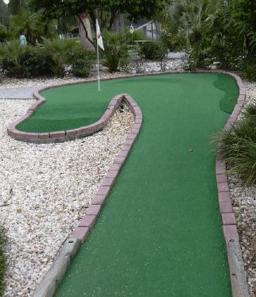

| J:
Ace Golf 820 South Kings Ave, Brandon
(west side of Kings Ave, south of 60)
(813) 651-4653, web site

| 
| Price: $7.50 Number of Courses: 1 Upkeep: C Originality: C Hole-in-One Difficulty: Hard Par Difficulty: Hard Music: Top-40
Ace Golf is a different but enjoyable course. The holes are long, and offer more topography than obstacles. Most holes have rock/water/sand hazards, and the holes even have pins with flags in the holes! We found the course challenging, just as the pleasant help said we would. They also have a driving range, batting cages, and a golf store. |